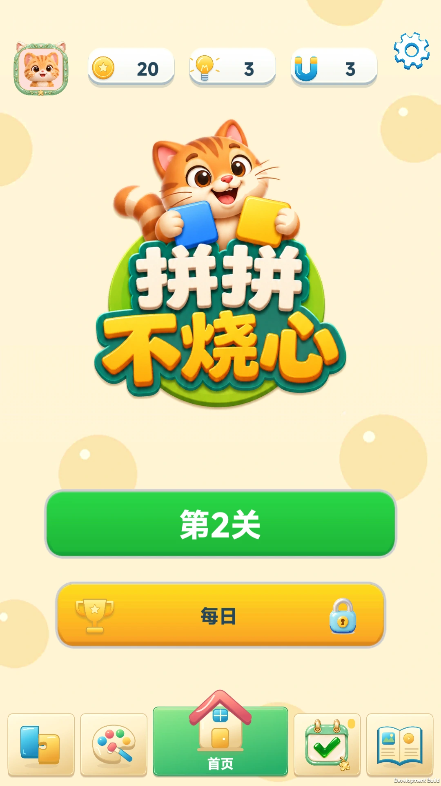
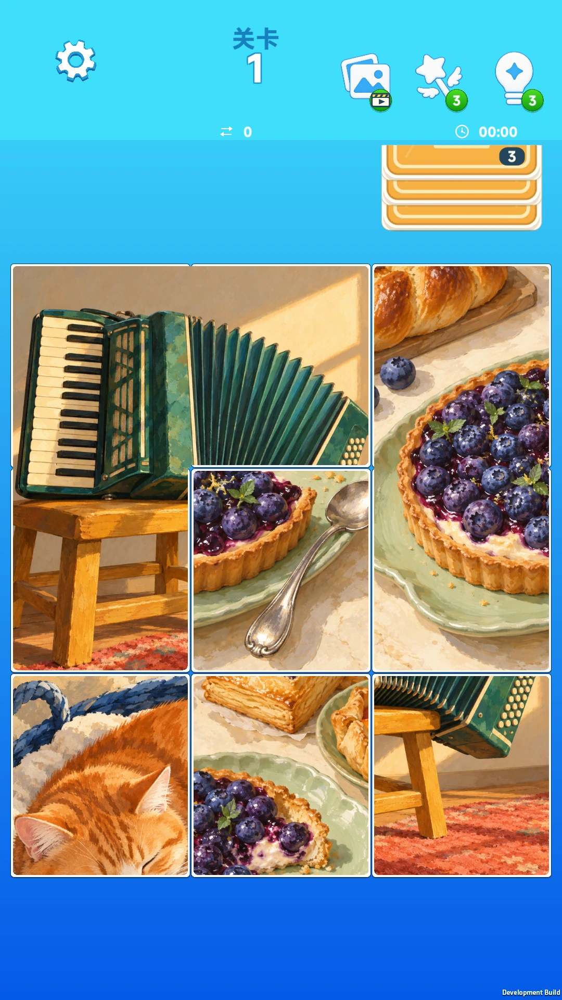
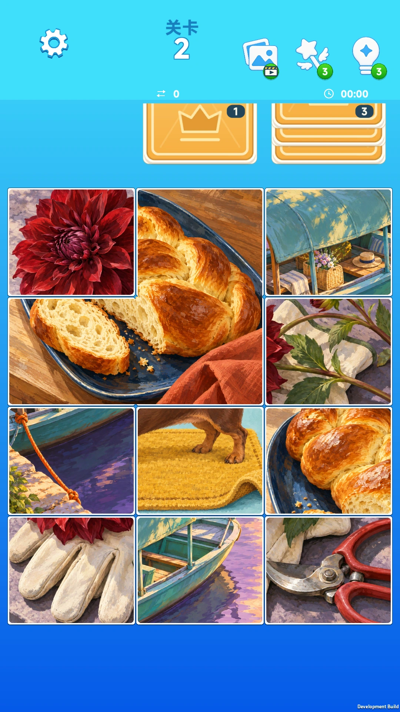
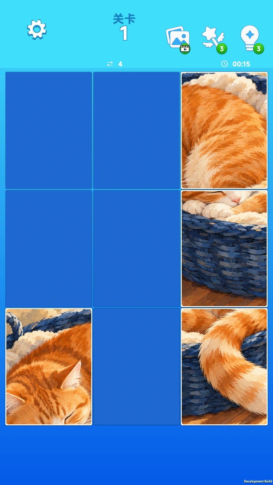
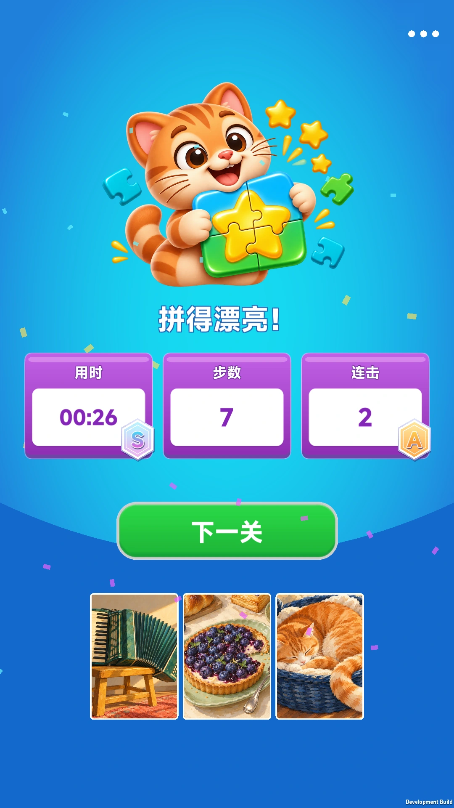
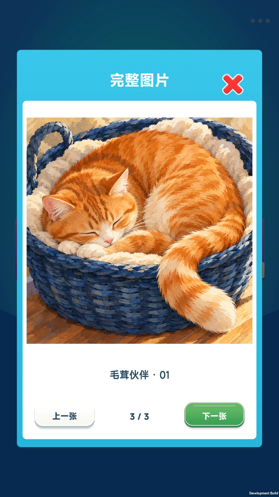
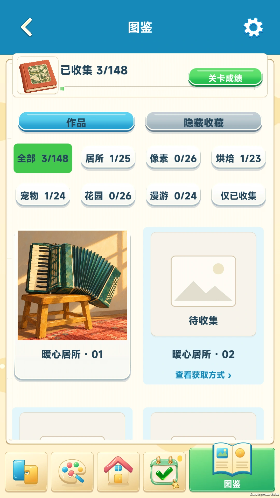
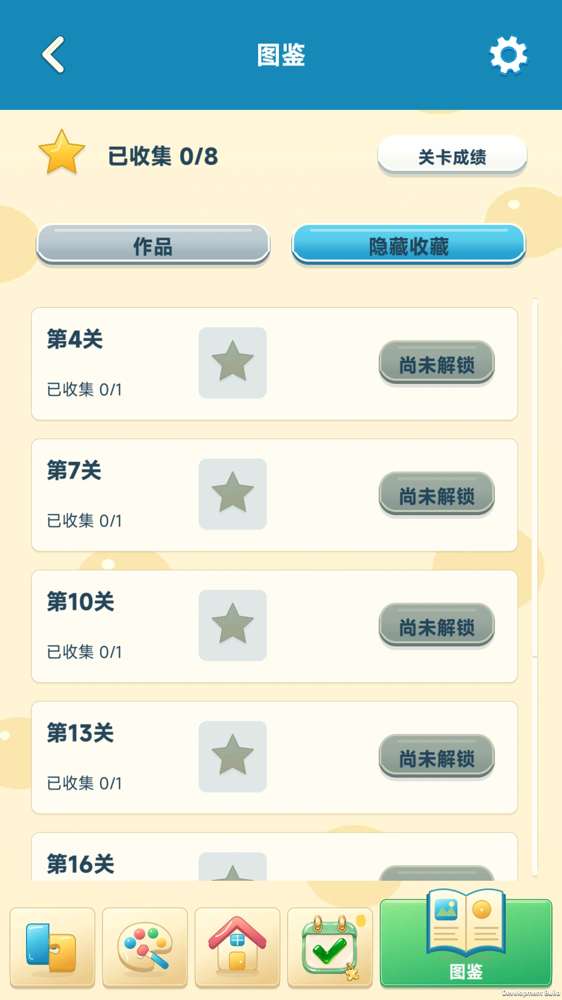

拼合后可以整组移动
玩家通过拖拽移动单个碎片。相邻碎片拼成小组后，可以整组移动，保留已经找到的接缝。
TAPTAP MAKER / 个人 AI 游戏实践
竖屏休闲 / 拼图益智
在同一块棋盘上拼合几幅生活插画。拼好的作品退场，待补碎片分批落下，完整插画可以收进图鉴。

Android 试玩版 0.60.0
GAMEPLAY / 核心体验
根据画面接缝寻找相邻碎片，拖动单片或已经拼合的小组。完整图片消除后，各列待补碎片进入棋盘。拼出本关全部作品即可结算，也可在结算中回看整图或回图鉴查看收藏进度。
ANDROID / 游戏实跑
简体中文画面来自 Android 模拟器实跑，包含关卡、补牌、结算和图鉴。
点击任意截图可查看原图。 多张画面可左右滑动，也可聚焦图库后使用方向键浏览。







DESIGN / 规则与取舍
玩家通过拖拽移动单个碎片。相邻碎片拼成小组后，可以整组移动，保留已经找到的接缝。
整图完成就消除，按批次补进新的碎片。最后一批落稳后，棋盘再展开，给剩余拼图腾出操作空间。
结算展示本关用时、步数、连击和完成的画作。玩家可以逐幅回看原图，并在图鉴中按主题查找收藏。
作品与隐藏收藏分开展示。作品可以按主题和收集状态筛选，隐藏收藏按关卡提示解锁进度。
MY PRACTICE / 项目推进
把拖拽、拼合、整图消除和分列补牌串成关卡循环，再用结算回看和图鉴把短局进度变成长期收藏。试玩验收覆盖首关完整通关、牌库耗尽后的棋盘展开、结算逐图回看与图鉴。
TAPTAP / 游戏入口
前往 TapTap 查看公开发行页。